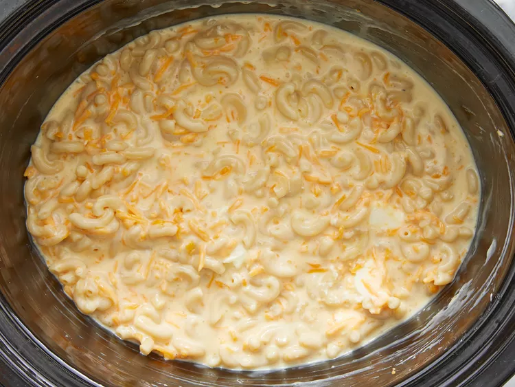
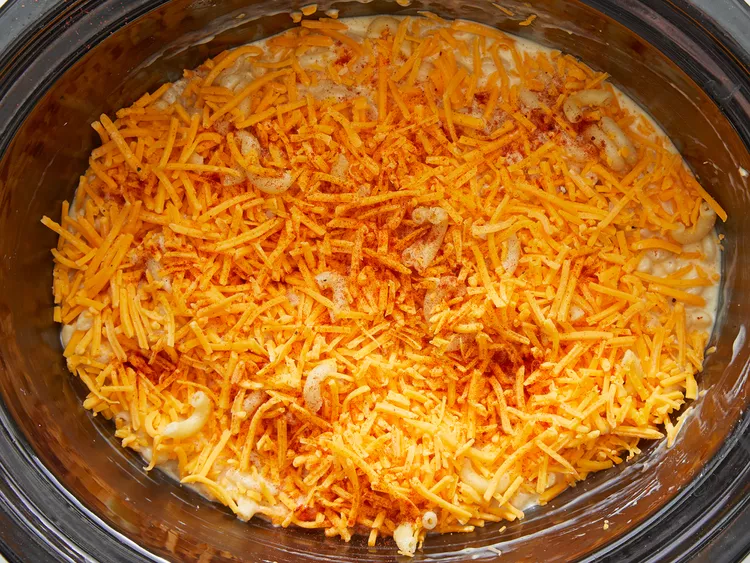

Mac and Cheese

Description
This crockpot mac and cheese is creamy, comforting, and takes just moments to assemble in a slow cooker.
Great for large family gatherings and to take to potluck dinners.
It’s always a big hit!
Ingredients
These are the ingredients you’ll need to make this mac and cheese recipe in the slow cooker:
- Macaroni: 1 package (16 ounce) elbow macaroni
- Butter: ½ cup butter
- Seasonings: Simply season the macaroni and cheese with salt and pepper.
- Cheese: 1 package (16 ounce) shredded Cheddar cheese, divided
- Milk: 1 can (5 ounce) evaporated milk and 2 cups whole milk
- Canned soup: 1 can (10.5 ounce) condensed Cheddar cheese soup (such as Campbell's)
- Paprika: 1 pinch Ground paprika, or as desired (Optional)
Steps
- Fill a large pot with lightly salted water and bring to a rolling boil. Stir in macaroni and return to a boil.
Cook pasta uncovered, stirring occasionally, until tender yet firm to the bite, about 8 minutes. Drain and transfer pasta to a slow cooker.
- Add butter to pasta and stir until melted; season with salt and pepper.
Sprinkle about ½ of the Cheddar cheese over pasta and stir.
- Whisk evaporated milk, whole milk and condensed soup together in a bowl until smooth; stir into pasta mixture.

- Sprinkle remaining cheese over pasta mixture; garnish with paprika.

- Cook on Low for 3 hours, checking the edges are not getting too brown after 2½ hours.
- Serve hot and enjoy!